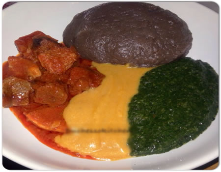

Amala & Ewedu

Description
Amala and abula is one of the favourite meals of many people
in the South Western part of Nigeria. Amala is a staple food
made from yam flour while abula is a mixture of gbegiri (bean soup)
and ewedu, a draw soup. This food is usually served at parties,
restaurants and some eatries. Below is the recipe for amala and abula.
Recipe for Ewedu
- ewedu leave
- Iru (locust beans)
- blended crayfish
- salt
How to prepare ewedu
- Blend the jute leaves and pour in a pot
- Pour in the Iru, blended crayfish and salt
- Stir in pot and do not cover throughout the process
- Boil on medium heat for about two to three minutes
- Serve with your stew and Amala
How to Prepare Amala
- Heat water on the fire to a boiling point
- When the water is boiled, bring it down from the fire and gradually begin to add your yam flour.
Do not add the flour to the water while still on the fire so it doesn’t form lumps.
- Begin to turn the yam flour with a wooden stick quickly so as not to form lumps.
Turn for a while add little water and put it back on the fire to cook on low heat for about five minutes.
- After five minutes, begin to turn the Amala again,
keep turning until a smooth lump is formed.
- serve with ewedu
Go back to home page